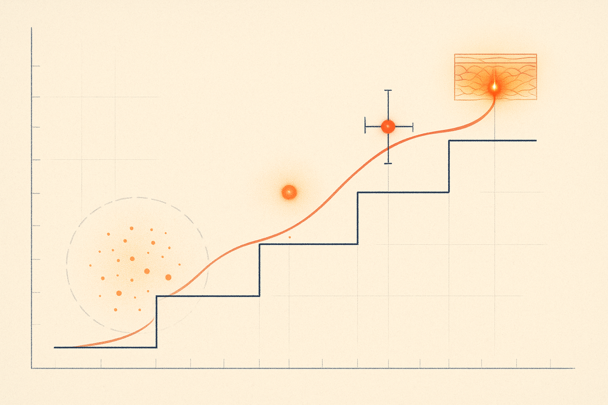
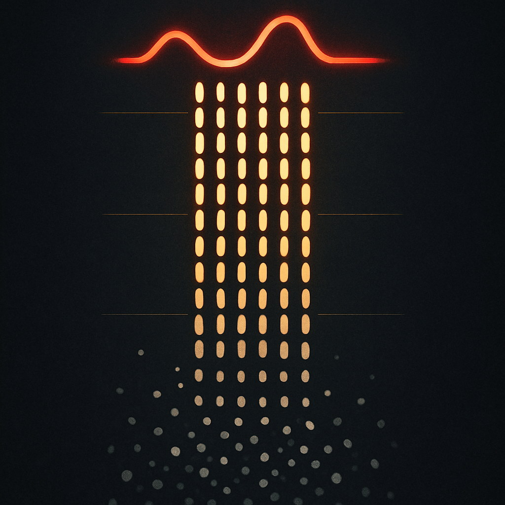
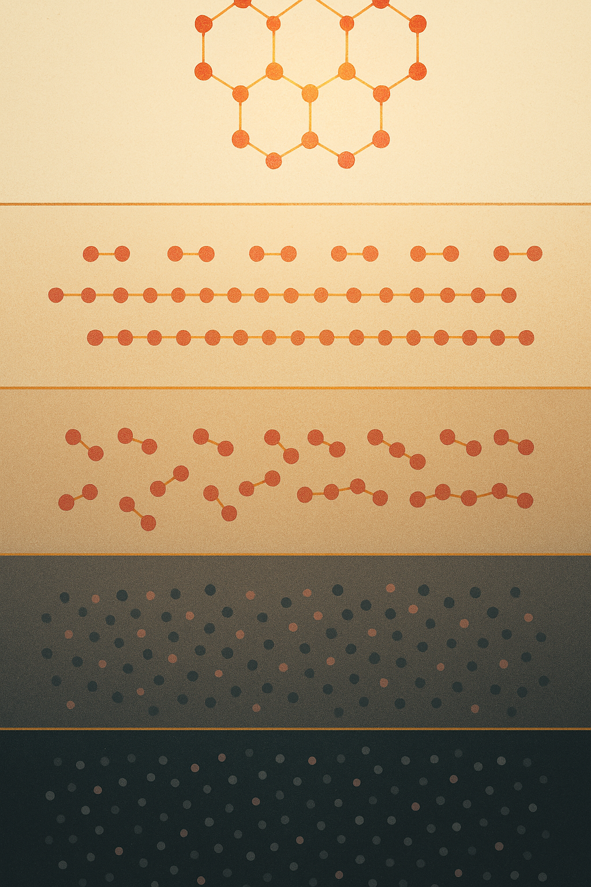

Review below. Reply approve to publish the Facebook post, or tell me edits.

There is a difference between "it works" and "there is strong evidence it works". Most beauty marketing is quietly counting on you never learning that difference. So here it is, in plain English, as a tool you can keep. Run it against any serum, any device, any LED mask, any promise on a shelf. Including ours.
Short answer: for some things, the footing is reasonably solid. For others, it is thin. And for a few things it is often implied to do, the honest answer is no.
But that answer is only useful if you can see how it was reached. Which brings us to the ladder.
Think of evidence as four rungs. Each rung up is worth more than the one below it, and most skincare claims never make it past the first.
This is the weakest rung, and it is where nearly every beauty claim lives. A plausible mechanism means someone can explain why something might work. For red light, the mechanism has a proper name: photobiomodulation. Stripped of the jargon, it means certain visible wavelengths of light can gently influence the activity of skin cells. That mechanism is real. It is studied, it is not made up.
But here is the trap: "plausible" is not "proven". Plenty of things that should work on paper do nothing in practice. A mechanism is a reason to look closer. It is not a verdict.
Takeaway: a mechanism is a reason to look closer, not proof that it works.
One step up. A small trial, or one striking before-and-after photo, is a clue. Treat it as exactly that. Small studies have small numbers, often no control group, and are frequently funded by the company selling the product.
None of that makes the result false. It makes it unconfirmed. A clue, not a conclusion.
Takeaway: one small study is a clue, not a conclusion.
Before-and-after photos deserve their own note, because they are the single most persuasive and least reliable thing in skincare marketing. A before-and-after photo has one participant, uncontrolled lighting, and every incentive to flatter. Warmer light, a fresh coat of moisturiser, a slightly different angle, a night of good sleep: any of these can carry the whole "result". Before you trust an LED mask before and after, ask three plain questions. Is the lighting identical in both frames? Is the angle and distance the same? Is anything else in the routine being changed at the same time? If you cannot answer yes, yes and no, you are looking at rung two dressed up as something stronger.
Takeaway: a before-and-after only means something under identical lighting, angle and routine.
This is where confidence starts earning its keep. When separate research groups, with separate funding, run separate trials and keep landing in roughly the same place, the odds of a fluke drop sharply. Replication is boring, and boring is exactly what you want. One exciting study is a headline. Five unglamorous ones that agree are a pattern.
Takeaway: when independent trials keep agreeing, a fluke becomes a pattern.
The top rung, and the only one that answers the question that actually matters: does it work on your skin? The catch is that it only counts if you do it properly. Fixed conditions. Same lighting, same angle, same time of day, photos taken weekly over at least eight weeks, with everything else in your routine held steady. Change nothing else, or you will not know what did what.
Your own tracked results outrank every study, for you. Vague impressions ("my skin seems nicer lately?") do not count. Memory is a terrible photographer.
Takeaway: your own weekly photos outrank every study, but only under fixed conditions.
Now the uncomfortable part: grading the thing we sell.
Stronger footing. The appearance of fine lines, skin tone and texture, and supporting the look of healthier, more radiant skin over weeks of consistent use. This is where red light has its most replicated research. Multiple independent trials point the same way. Not rung four for you personally, but a genuine rung three.
Moderate, and context-dependent. Home LED devices are lower-powered than clinic panels. That is not a scandal, it is physics, but it means effects at home are gentler and slower than the clinic studies suggest. Consistency does most of the work. Ten minutes a day, most days, over weeks. Closer to flossing than to a facelift.
Weak or none. This is the list most brands skip. Red light will not restore lost dermal thickness. It will not replace daily SPF, and skipping sunscreen because you own a mask is trading a proven protector for a gentler helper. It will not fix hormonal skin changes; those are driven from the inside and light does not reach that lever. It is not a filler, not a peel, and not medicine. Any brand implying otherwise has climbed off the ladder entirely.
For the record, an LED mask like ours is a cosmetic device, not a medical one, and we make no therapeutic or medical claims for it.
If you use an LED red light mask consistently, the honest timeline looks like this. A visible glow and more even-looking tone tends to show first, around 7 to 10 days. Softened appearance of fine lines is slower, typically at the 4 to 8 week mark, and only with consistent use. Anyone promising dramatic change in a weekend is selling rung one dressed up as rung four.
One more thing, in the spirit of the ladder. Redermis is a new brand. We do not yet have a wall of reviews, and we are not going to invent any. Fabricated social proof is just rung two with the serial numbers filed off, and you deserve better than that.
So keep the ladder. Use it on us, use it on everyone. Mechanism, clue, pattern, proof on your own face. In that order, and never confuse the bottom rung for the top.
If you ever want to run this same ladder against our own mask, see the spec.

We sell a red light mask. Here is a four-rung ladder for catching brands like us out.
There is a difference between "it works" and "there is strong evidence it works". Most brands hope you never learn it. So grade any skincare claim, ours included, on four rungs.
Rung one is a plausible mechanism. Someone can explain why a thing might work. Interesting, but plenty of plausible ideas do nothing in practice. This is not proof.
Rung two is one small study, or a single before and after. A hint, not a verdict. Small trials often have no control group, and one photo can be lighting, angle or luck.
Rung three is several independent studies pointing the same way. Different labs, different funding, similar results. Now you have something worth trusting.
Rung four is your own tracked results. Same light, same angle, photos taken weekly over weeks. The only evidence that is actually about your skin.
So where does red light honestly sit? Firmer footing, around rung three, for the look of fine lines, tone and texture over weeks. Home masks are lower-powered than clinic panels, so expect gentler and slower.
Now the part most brands skip. A red light mask will not restore dermal thickness. It will not replace your daily SPF. It will not fix hormonal skin changes. It is a cosmetic device, not medicine.
We are a new brand, still earning our reviews, and we will not invent any. We would rather teach you to grade our claims than hope you never ask.
Your turn: what is a beauty claim you once believed, until you actually went looking for the evidence?
**CTA:** Soft, in first comment (not the body): "The full spec, if you want a closer look: https://redermis.com.au/products/red-light-therapy-face-neck-mask". Post this as the FIRST COMMENT immediately after the post goes live. The body carries no purchase path by design, so if that comment is dropped the post has no link path. Body CTA is the discussion prompt only: what is a beauty claim you once believed, until you looked for the evidence?
**Hashtags:** #RedLightTherapy #SkinScience #SkincareFacts
**IMAGE PROMPT:** Iconic editorial science illustration in the spirit of New Scientist: a single tall vertical motif of order emerging from noise, centred on deep charcoal-slate negative space. At the base, a chaotic scatter of small grey and slate particles drifts with no pattern. Rising upward they begin to pair, then align into short chains warming to amber, then into ordered parallel rows glowing cream and ember, until at the very top they resolve into one smooth, confident, luminous deep-red wavelength line, clean and coherent. Four faint gold hairline guide rules cross the column like the rungs of a ladder, marking the increasing certainty from bottom to top. Warm the middle strata toward cream and ember rather than cold slate, so the column heats gradually as it climbs. One warm iconic motif, painterly-meets-graphic, fine grain, chiaroscuro, dramatic dark negative space. Palette: charcoal and slate base, warming through cream and ember, a single deep-red coherent glow at the summit, warm gold guide lines. No text, no labels, no numbers, no people, no faces, no devices, no products, no logos.

Before you buy any skincare device, ask one question: how good is the evidence, really?
Not all "proof" is equal. Here is the ladder we use. Screenshot it.
**Rung one: a plausible mechanism.**
"Red light interacts with cells" is a starting point, not proof. Plenty of plausible things do not pan out.
**Rung two: one small study, or a single before and after.**
A clue. Interesting. Still not proof. One before and after photo can be lighting, angles, or luck.
**Rung three: several independent studies agreeing.**
Now we are talking. Different labs, similar results. This is where a claim starts earning trust.
**Rung four: your own results, tracked over weeks.**
Same light, same angle, photos taken weekly. The only evidence that is actually about your skin.
Where does red light honestly sit?
Strongest footing: the look of fine lines and skin tone, gradually, over weeks.
Home devices are lower-powered than clinic machines, so gentler and slower.
It will not replace SPF, restore dermal thickness, or fix hormones. Cosmetic device, not medicine.
Realistic timeline: many people notice glow and tone at 7 to 10 days. Softened-looking fine lines tend to show at 4 to 8 weeks, if they show.
And rung four for us? Redermis is new here on IG. We do not have a wall of tagged results yet, and we would rather wait for real ones than fake it.
Save this for your next "does it actually work" moment. Full spec is in our bio if you want a closer look.
Which rung do most ads stop at? Tell us below.
#redlighttherapy #skincareaustralia #evidencebasedskincare #skincarefacts #ledmask #ledmaskbeforeandafter #skincareover40 #skincareover30 #ausbeauty #skinlongevity #honestskincare #beautytech
IMAGE PROMPT: Elegant vertical editorial science illustration in the style of Scientific American or Quanta magazine: a conceptual "order from noise" diagram across four clearly separated horizontal strata read bottom to top like the rungs of a ladder, each stratum more ordered and more luminous than the one below. Bottom stratum: a dense chaotic scatter of small dots in muted charcoal and dusty rose, drifting randomly with no pattern. Second stratum: particles pairing into loose short chains, warming slightly. Third stratum: neat repeating rows of particles joined by thin gold connecting lines, amber-warm. Top stratum: a fully resolved, luminous warm-red-and-gold hexagonal crystalline lattice, rendered with fine precise linework. Thin gold hairline rules cleanly separate the four strata. Warm cream-to-charcoal gradient background, warm red, gold and cream palette, subtle grain, generous negative space, clean flat infographic style with delicate line detail. ABSOLUTELY no symbols, glyphs, slashed circles, asterisks, chart icons, ring glyphs, starbursts, text, labels, numbers, people, faces, devices, products or logos.
**Title:** Red Light Therapy Evidence, Ranked Honestly: How to Grade Any Skincare Claim
**Description:** How to tell if a red light therapy mask actually works, before you buy one. Run any LED face mask claim, ours included, up a four-rung evidence ladder: a plausible mechanism, one small study or a single before and after, several independent studies agreeing (where the look of fine lines and tone over 4 to 8 weeks actually sits), and your own results, tracked weekly, same light and angle. Home devices work gently and gradually, not overnight. Never mistake the bottom rung for the top.
**Destination URL:** https://redermis.com.au/products/red-light-therapy-face-neck-mask
**Hashtags:** #RedLightTherapy #LEDFaceMask #RedLightTherapyAtHome #SkincareScience #SkinLongevity
Note: this pin reuses the Instagram image (no separate image is generated for Pinterest).